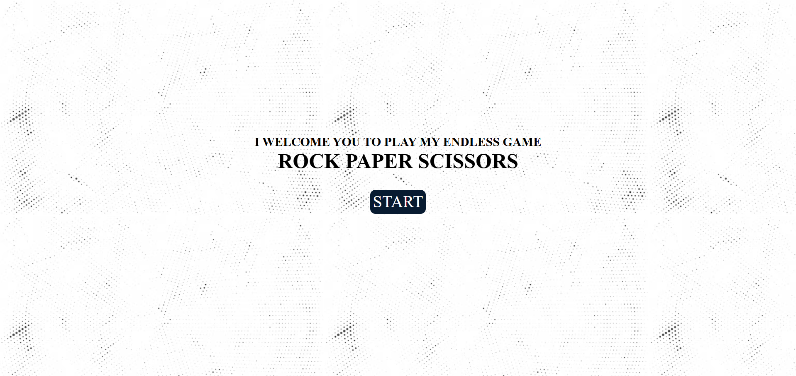
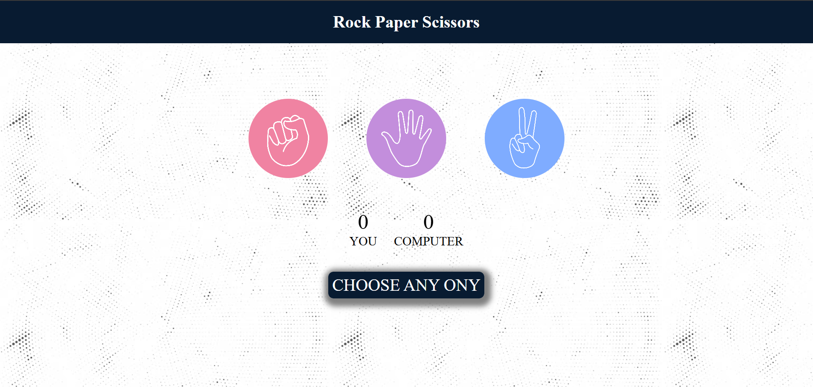
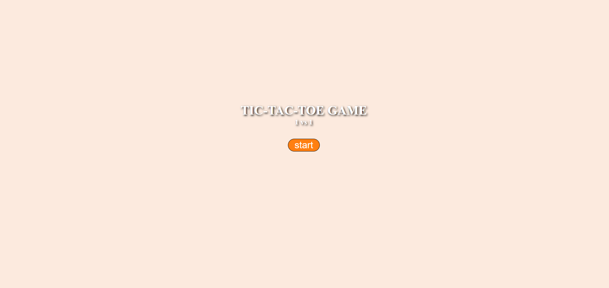
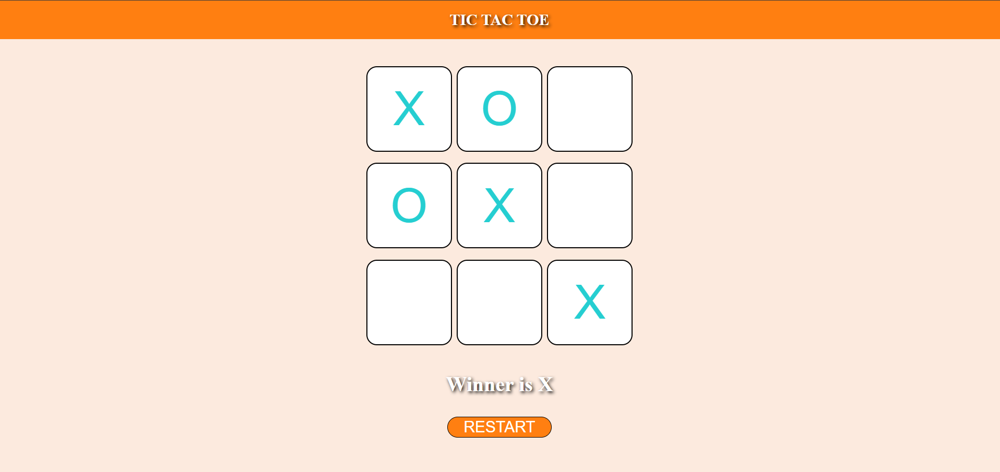

PROJECTS
ONGOING PROJECTS
MINI-PROJECTS
ONGOING PROJECT
ATS-Optimized Resume Builder
AIM :
To develop an ATS-Optimized Resume Builder
that enables job seekers to create resumes that effectively
pass through ATS systems, enhancing their chances of securing
interviews by providing customizable templates, keyword analysis,
and real-time feedback on ATS compatibility.
Goals :
• Aimed to create an ATS-friendly resume builder that offers customizable templates, keyword analysis, and real-time ATS compatibility feedback.
• After the implementation of the project I wanted Increase user engagement by 30% with real-time feedback and keyword suggestions.
• Aimed to Improve ATS pass rate by optimizing resume structure and content.
MINI-PROJECTS
ROCK PAPER SCISSORS
Description :
In the Rock Paper Scissors game,
the user selects rock, paper, or scissors while
the computer randomly chooses its option. The winner
is determined by the rules: rock crushes scissors, scissors
cut paper, and paper covers rock. This simple game
allows users to compete against the computer
in a fun and quick manner.
UI:


Game Link :
Check out this exciting game
and join the adventure by clicking the
link below!
ROCK PAPER SCISSORS
Description :
In a two-user Tic Tac Toe
game on a computer, each player takes turns
placing their symbols (X or O) on a 3x3 grid,
competing to be the first to align three of their
symbols in a row, column, or diagonal, while also
trying to anticipate and block their opponent's moves
to prevent them from winning.
UI:


Game Link :
Check out this exciting game
and join the adventure by clicking the
link below!